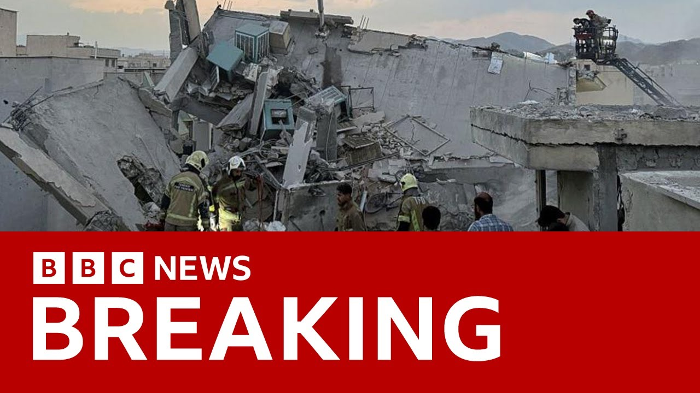

【以色列对伊朗发动新一轮空袭 目标包括核设施与军事基地 | BBC新闻】
Summary: Israel launched a large-scale airstrike on Iran, far exceeding the scale of last year's operations. Israel stated that the target was Iran’s nuclear program, calling it a matter of national survival. Iran condemned the strike as an act of war. Explosions occurred in Tehran and at the Natanz nuclear facility, resulting in the deaths of several nuclear scientists and military commanders, with civilian casualties also reported. The extent of the damage to Iran’s nuclear facilities remains unclear, as much of the program is conducted underground. Israeli military operations are ongoing, and Mossad has unusually released footage of attack preparations within Iran. Iran has responded by dispatching drones in retaliation, but all were intercepted. This program will analyze the details of the attack, the strategies of both sides, and feature live reports from journalists in Jerusalem, the White House, and Westminster.
摘要： 以色列对伊朗发动大规模空袭，规模远超去年。以方称袭击目标是伊朗核计划，事关国家存亡；伊朗则谴责这是战争行为。德黑兰及纳坦兹核设施发生爆炸，多名核科学家与军事指挥官丧生，平民亦有伤亡。伊朗核设施受损程度尚不明确，其核计划多在地下进行。以色列军方行动持续，摩萨德罕见公布在伊境内准备攻击的影像。伊朗已派遣无人机报复，但均被拦截。节目将分析袭击细节、双方战略，并连线耶路撒冷、白宫和西敏寺的记者。

⏱️ Estimated Reading Time: 16 min
📚 六级生词 📚 雅思生词 📚 托福生词 📚 专八生词 📚 SAT生词 📚 考研生词 📚 GRE生词 📚 高考生词
Hello and welcome to Verified Live.
欢迎收看《事实核查直播》。
On a day totally dominated by Israel strikes on Iran, the magnitude of these attacks are on a completely different scale to what we saw last year.
在以色列空袭伊朗主导全局的今天，此次攻击规模与去年所见截然不同。
Israel says they targeted Iran's nuclear program, claiming it was their very survival that was at stake.
以色列称其目标是伊朗核计划，并声称这关乎国家存亡。
Thran, though, has described it as an act of war.
德黑兰方面则称此为战争行为。
Explosions were heard in the capital, Tehran, and at the Natans nuclear facility around 200 miles to the south.
首都德黑兰及南方约200英里的纳坦兹核设施均传出爆炸声。
Several Iranian nuclear scientists and military commanders have been killed.
数名伊朗核科学家与军事指挥官遇袭身亡。
Iran's state TV is reporting that civilians, including children, are among the dead.
伊朗国家电视台报道称死者中包含妇女儿童等平民。
Well, the scale of the damage to the nuclear facilities like this in Natans is not yet clearly known.
目前纳坦兹等核设施的损毁程度尚不明确。
Much of the Iranian program is carried out deep underground.
伊朗核计划多数设施深藏地下。
Well, Israel says its military action is continuing.
以色列表示军事行动仍在继续。
Its Secret Service, Mossad, has taken the rare step of releasing this footage, what it claims was filmed inside Iran, showing its operatives preparing to launch an attack.
情报机构摩萨德罕见公布据称摄于伊朗境内的影像，显示特工正筹备攻击。
Well, Iran has already retaliated, sending a wave of drones towards Israel.
伊朗已展开报复，向以色列派遣无人机群。
Israeli forces say all of them were intercepted.
以军称已全部拦截。
In the next 60 minutes, we'll bring you the latest reaction from various capitals.
接下来60分钟我们将带来各国首都的最新反应。
We'll also look at what was hit, who was hit.
同时分析受袭目标与伤亡情况。
would also examine the various strategies being carried out by Israel and Iran.
并将解读以伊双方的战略部署。
Well, let's talk to our correspondents in Jerusalem.
现在连线耶路撒冷记者。
Ioni Wells is there.
艾奥尼·韦尔斯在现场。
Our North America correspondent Nomia Igba is there at the White House and our political correspondent Helen Kat is at Westminster.
北美记者诺米娅·伊格巴驻守白宫，政治记者海伦·凯特在西敏寺。
But I want to go straight to the White House and straight to Nomia because over the last couple of hours Nomia a number of lines the president g has given several interviews.
但首先直击白宫——诺米娅，过去几小时总统接受多次采访。
What is the general thrust of what Donald Trump is saying?
特朗普的核心表态是什么？
Well, to be quite straight with you, Matthew, it's incredibly confusing.
直白说马修，情况极其混乱。
Uh, initially, we were told by the Trump administration via the Secretary of State Marco Rubio that the US was not involved in this.
起初国务卿马可·卢比奥代表政府声明美国未参与。
U, Mr. Rubio really distancing the US from Israel's actions, calling them unilateral.
卢比奥强调美方与以方行动无关，称其属单边行为。
Uh Donald Trump then appears to have contradicted that uh saying a few moments ago that we knew everything exactly what they knew.
但特朗普稍早表态似乎与之矛盾，称"我们掌握的情报与他们完全一致"。
We we don't know.
具体尚不明确。
Uh the White House is still saying they didn't greenlight it.
白宫仍称未予批准。
So they may not have uh officially approved of the attack, but they certainly approve of it.
虽未正式授权，但显然表示支持。
Uh because in his social media posts, Mr. Trump appears to basically be saying to Iran, "Start negotiating and if you don't, there will be more of this to come."
特朗普在社媒暗示伊朗"必须谈判，否则将面临更猛烈打击"。
And I suspect the US is using this as some sort of leverage to push Iran to the negotiation table.
美方似将此作为施压伊朗重返谈判桌的筹码。
There is an emergency meeting right now being held by President Trump here at the White House with his cabinet.
特朗普正与内阁召开紧急会议。
We understand that he will be talking to the Israeli Prime Minister Benjamin Netanyahu later this afternoon, but there are also reports that uh he and Mr. Netanyahu were talking yesterday in several phone calls.
据悉他将于下午联系以总理内塔尼亚胡，但有消息称双方昨日已多次通话。
So there is some confusion about exactly what the US knew, how much it's involved in all of this, but I do think looking at the social media post by Donald Trump, he clearly approves of what Israel is doing.
美国知情程度与参与度尚存疑，但特朗普社媒明确显示其支持以色列行动。
Nomia, I'll return to you in a moment, but let's go to Jerusalem and I Wells.
稍后继续连线，现在转向耶路撒冷的艾奥尼·韦尔斯。
And I just in the last few minutes, reports coming in that there are multiple blasts that have been heard in Tehran.
最新消息显示德黑兰再现多起爆炸。
There are also blasts to the west of Tehran.
德黑兰西部也发生爆炸。
And that fits with what the Israeli authorities and perhaps what Donald Trump was alluding to in his social media post that this is ongoing.
这与以色列当局及特朗普社媒暗示"行动持续"相吻合。
It is simply the start of things.
这只是开端。
That's right.
确实如此。
In the last couple of minutes, as you say, Iranian state TV have confirmed that they are intercepting missiles over Thran.
正如您所说，伊朗国家电视台刚证实正在德黑兰上空拦截导弹。
And that doesn't really come as a surprise.
这并不意外。
As you say, it was expected that there would be further escalation in this conflict after Israel launched severe strikes last night on Iran.
以色列昨夜发动猛烈空袭后，冲突升级已在预料之中。
I think it's worth just recapping uh just how much of a devastating shock those strikes were to Iran.
值得回顾这些空袭对伊朗造成的震撼性打击。
Uh they came uh in the middle of the night attacking some of Iran's most senior military commanders as well as nuclear scientists.
午夜行动中，伊朗多名高级军事指挥官与核科学家遇袭。
more than 200 planes striking more than a 100 sites in Iran.
逾200架战机袭击伊朗境内超100个目标。
As well as that, Mossad, Israel's intelligence agency, launched missiles from inside of Iranian territory.
摩萨德特工更从伊朗境内发射导弹。
So, uh it is clear that this was a severe escalation and that attacks are expected to continue between the two sides in the coming hours, but also in the coming days.
显然局势严重升级，预计未来数小时乃至数日攻击将持续。
One thing that both sides agree on is that this is just the beginning.
双方共识是：这只是开始。
Uh the IDF, Israel's military has said that this is war.
以色列国防军称此为战争。
Iran's foreign ministry has described Israel's actions yesterday as a declaration of war and both sides are expected to continue these attacks as I say in the coming days, coming hours.
伊朗外交部称以方行动属宣战，如我所言双方攻击将持续。
Uh that's something which was reiterated as you mentioned there by the US President Donald Trump who said in a statement that if Iran didn't agree a deal that more brutal attacks were coming.
特朗普声明中重申：若伊朗拒绝协议，将面临更猛烈打击。
uh President Prime Minister Benjamin Netanyahu's been speaking to foreign leaders including an expected conversation with President Trump.
内塔尼亚胡正与多国领导人通话，包括即将与特朗普进行的对话。
So it may be that we get more indication once those calls are complete about some next steps expected.
通话结束后或能获知后续行动迹象。
I'll be back I only to you in a moment or two but I want to bring in Helen Kat in Westminster because Helen we were hearing earlier about the upcoming phone call between Benjamin Netanyahu and Donald Trump also Vladimir Putin but we know from the prime minister's office he's also spoken to the leaders of Germany, India and France.
稍后继续连线，现引入西敏寺的海伦·凯特——除将与特朗普、普京通话外，以总理办公室称其已与德、印、法领导人交谈。
Uh the obvious omission is number 10.
明显遗漏是唐宁街10号。
We know that relations have been strained over recent days, but interesting, no apparent call to Sakir Starma.
近日关系紧张，但值得注意的是尚未与斯塔默通话。
Yeah, this was brought up at the daily briefing for reporters in Westminster, and the Downing Street spokesperson couldn't or wouldn't say whether there had been any call between Kstalma and Benjamin Netanyahu.
西敏寺记者会上，唐宁街发言人未明确回答双方是否通话。
Now, Karma has addressed that since in an interview with Bloomberg.
斯塔默接受彭博采访时谈及此事。
He had said that he was planning to call Mr. Netanyahu this afternoon.
称计划下午致电内塔尼亚胡。
We don't yet know if that call has taken place, but as you said, there's been a real effort am I in the government here to focus on deescalation and diplomacy and specifically working with allies to try and put the pressure on to reach a a diplomatic solution.
尚不确定通话是否实现，但如您所言，英政府正全力推动降级与外交，联合盟友施压寻求外交解决。
So, as there was a call between Karma uh this morning and the president of France, Emanuel Mccron, and the German Chancellor Friedrich Mertz.
斯塔默今晨已与法国总统马克龙、德国总理默茨通话。
Now, in that call, the leaders discussed what were described as their longheld grave concerns about Iran's nuclear program.
领导人讨论了对伊朗核计划的长期严重关切。
They called on all sides to refrain from further escalation, uh, which they say could destabilize the region.
呼吁各方避免进一步升级，称这将破坏地区稳定。
So, that certainly does seem to be the focus from the government here.
这显然是英政府当前重点。
Should say though, there's a slightly different tone coming out from the leader of the opposition, Kem Benedo.
但反对党领袖基尔·斯塔默表态略有不同。
had declined to uh to to say Israel's actions, she said, as an escalation and instead said it should not be condemned if it was stopping Iran from getting nuclear weapons.
拒绝称以方行动属升级，表示若为阻止伊朗拥核则不应受谴责。
Helen, thanks very much.
非常感谢海伦。
Let's head back to the White House and Nomia and Nomia, one of the things that Donald Trump has said in the last hour is that he's pretty confident that there won't be a regional war, but the very fact he has to say a phrase like that underlines what is at risk here.
回到白宫的诺米娅——特朗普刚称确信不会爆发地区战争，但此言恰恰凸显风险。
It does.
确实。
And bear in mind, this is a president who has made a big point in his campaigning that he doesn't believe in wars.
需注意：这位总统在竞选中强调"反对战争"。
He's a no-w president.
他是"不战总统"。
He doesn't want any foreign intervention.
反对对外干预。
He wants countries to to get on with whatever they want to do.
主张各国自主行事。
He doesn't want the US intervening.
不愿美国介入。
And so certainly those who support him, his coalition, his base will be split on this.
其支持者阵营对此意见分化。
They'll be thinking, well, hang on a minute.
他们会质疑：美国参与度究竟多深？
Um how much is the US involved in this?
尽管白宫称未正式批准。
Uh and you know as we were talking earlier uh even though the White House is saying that they didn't officially green light this it does appear that Donald Trump hugely approves of this and it is going to be somewhat of a balancing act for him because of course Israel is uh the US's greatest ally in the Middle East and they want to protect Israel.
但特朗普显然高度支持，这对其是种平衡——以色列作为美在中东最重要盟友需受保护。
We know that Donald Trump is uh uh very adamant about that, but at the same time has to deliver on that promise that he has constantly made to his supporters about uh no wars.
特朗普对此态度坚决，但需兑现对支持者"不战"承诺。
And I just want to also add, Matthew, um we understand that the Pentagon is now moving US destroyers to the Eastern Mediterranean as Israel um obviously braces for that potential retaliation.
补充：五角大楼正调遣驱逐舰至东地中海，以应对以色列可能遭到的报复。
Now, these ships are capable of defending against ballistic and uh cruise missile attacks.
这些舰艇可防御弹道导弹与巡航导弹。
They were already in the region, but they're now rrooting uh because of Israel's attack on Iran to provide the US with that extra layer of security.
原驻该区域，现因以袭伊事件重新部署以增强美军防护。
The US is obviously very concerned about any retaliation on on US targets and US personnel and have made it quite clear to Iran that uh they will not accept that if it happens.
美方明确警告伊朗：不接受针对美国目标及人员的报复。
Nomia, thanks very much.
非常感谢诺米娅。
Let's head back to Jerusalem and I Wells and I only we were listening to Danny Dan on there at the UN a short while ago and we'll play that clip for viewers in a moment or two.
回到耶路撒冷的艾奥尼——稍后将播放达尼·达农在联合国发言片段。
But uh he was repeating what the IDF had said to me earlier in the day which is that Israel perceived that there was a realistic threat imminent.
他重申以国防军日间表态：以色列面临迫在眉睫的现实威胁。
That is their position in as to why they launched this attack.
此为发动攻击的理由。
But the truth is that over decades Benjamin Netanyahu has wanted to do action like this, isn't it?
但事实是内塔尼亚胡数十年来一直渴望此类行动？
Yeah, that's right.
确实如此。
This is something that Benjamin Netanyahu has been talking about since the 1990s.
他自1990年代便有此主张。
Uh not just about a threat of nuclear weapons from Iran being imminent, but a desire to neutralize them.
不仅认为伊朗核威胁迫近，更希望消除该威胁。
It seems that now the prime minister felt emboldened to try to do so.
如今总理似乎获得行动底气。
As you say, Netanyahu shortly after these strikes were made last night uh said that his justification for this was that Iran had now uh kind of developed nuclear material sufficient to make nuclear weapons uh enough to make nine nuclear bombs.
如您所言，空袭后内塔尼亚胡称伊朗已拥有可制造九枚核弹的核材料。
Now Iran has always continuously denied that its nuclear capabilities are for weaponry and said that they are for civilian use only.
伊朗始终否认发展核武，坚称仅用于民用。
Uh but one uh extra sort of factor this week was that uh the international uh atomic energy agency had said that Iran for the first time in 20 years was breaching its uh anti-p proliferation obligations which is something that has also been cited by the Israelis today.
但本周国际原子能机构指伊朗20年来首次违反防扩散义务，以方今日亦援引此点。
I thanks very much.
非常感谢。
I'm going to quickly go back to Westminster because there's been a development just as we were having the conversations with our correspondents Helen Cat.
速返西敏寺——与记者对话期间出现新进展。
There is an update from Downing Street.
唐宁街发布更新。
There is.
是的。
Yes.
没错。
You were talking about whether or not there had been a call between Kier Thalmer and Benjamin Netanyahu.
您刚才询问斯塔默与内塔尼亚胡是否通话。
We understand that that has now happened although as you mentioned earlier quite a long way it would appear down the list of world leaders this afternoon.
据悉通话已进行，但如您所言排序远在其他世界领导人之后。
Uh in that we're told that Kier Stalmer uh said that he uh he recognized that Israel had a clear right to self-defense.
斯塔默表示明确承认以色列自卫权。
He was clear that Israel had a right to self-defense.
他明确以色列享有自卫权。
Sorry.
抱歉。
And that he again expressed his grave concerns about Israel's nuclear program.
并再次表达对伊朗核计划的严重关切。
Helen Cat there at Westminster.
西敏寺的海伦·凯特。
Thanks very much.
非常感谢。
And thanks to to Iony Wells and thanks to Nomi Igbal at the White House.
同时感谢耶路撒冷的艾奥尼·韦尔斯与白宫的诺米娅·伊格巴。
Plenty more on that.
更多相关内容。
Our main story coming up in a moment or two.
稍后进入主新闻。
but around the world and across the UK.
但全球与全英各地...